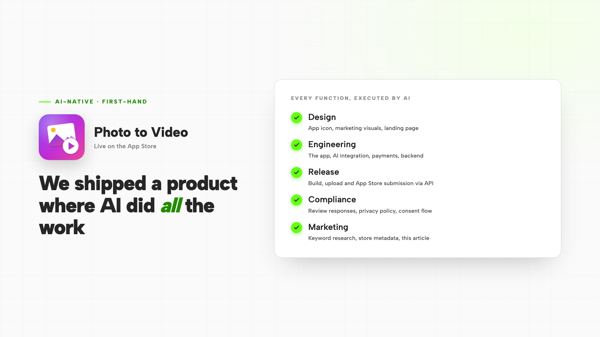

AI-Native in Practice: How We Designed, Built, Shipped and Marketed a Product With AI
We took a consumer product from idea to a paid, live App Store listing with AI executing the design, engineering, release, compliance and marketing. A first-hand look at what an AI-native operating model actually changes — and what stays human.
Read article →